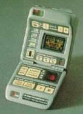
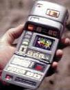
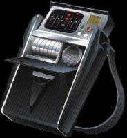

Tricorder |
Il tricorder è un compatto e potente strumento sensorio portatile per esaminare l'ambiente circostante e per raccogliere dati sul campo. Il tricorder standard è equipaggiato con vari apparati sensori, un computer e una ricetrasmittente; esistono anche altri tricorder per utilizzi specializzati, come il tricorder medico.
Quando viene aperto, il tricorder mostra una serie di comandi e di display la
cui funzione è brevemente descritta di seguito.
PWR STBY Indicatore di standby.
F1 F2 Molti controlli e selezioni del tricorder hanno due selezioni o due
opzioni, questo tasto permette di sceglierle.
I E Questi due tasti permettono di selezionare la fonte dei rilevamenti
sensori. Il tasto I (Internal) seleziona i sensori interni al tricorder,
mentre E (External) seleziona una fonte esterna, che può essere anche il
computer di un'astronave.
Alpha Beta Gamma Delta Questi quattro indicatori mostrano la funzione
attuale del tricorder: registrazione (alpha), accesso ai dati (beta),
elaborazione dati (gamma), trasmissione (delta).
Visore Il piccolo visore ad alta definizione permette di visualizzare i
dati raccolti ed elaborati dal tricorder. Il visore incorpora anche uno speaker.
Library A B Permette di selezionare se registrare i dati raccolti nella
memoria interna del tricorder (A) oppure in uno dei due chip isolineari
rimovibili (B).
GEO MET BIO Selezionano il tipo di analisi da compiere: geologica,
meteorologica o biologica.
Comm Transmission Questi quattro pulsanti permettono di selezionare la
comunicazione con altri dispositivi. Accept permette di ricevere
informazioni da altre sorgenti, Pool mette in comunicazione il tricorder
con un network di altri dispositivi, Intership collega il tricorder al
computer della nave e Tricorder lo collega ad altri tricorder.
EMRG Pulsante per la trasmissione di emergenza: quando viene attivato, il
tricorder scarica tutti i dati memorizzati al computer della nave. Questa
funzione può richiedere fino a dieci minuti e, quando è in corso il
trasferimento, tutte le altre funzioni sono inibite.
Image Record Questi pulsanti permettono di registrare e riascoltare le
registrazioni audio e video stoccate nell'unità.
ID Questo sensore permette di riconoscere il campo bioelettrico di una
persona, in modo da poter inibire ad altri l'uso del tricorder.
Tricorder
medico
Il tricorder medico è simile al dispositivo standard, ma è progettato per
rilevare i dati vitali e per compiere analisi mediche. È in oltre fornito di un
piccolo scanner a corto raggio, che permette di ottenere una rilevazione più
precisa. La precisione della rilevazioni dipende dalla potenza dei sensori e
dalla distanza della persona a cui viene eseguito l'esame. Gli ultimi modelli di
tricorder sono anche in grado di eseguire comandi vocali. Il tricorder medico è
dotato di un display alfanumerico, ha un involucro in duritanio e le sue
dimensioni in centimetri sono 7,6 x 9,8 x 3,2 (Retrospect).
Le particelle toroniche (scaturite, per esempio, da un generatore toronico
portatile) neutralizzano i sensori dei tricorder (Basics
- Part II).
Un tricorder può generare un campo di dispersione (Darkling).
È possibile far emanare dal tricorder un segnale termico a dispersione per
rendere più difficile l'individuazione tramite radiazioni infrarosse (Macrocosm).
Tricorder
fino al 2300
Fino al 2300 circa i tricorder erano di dimensioni maggiori, circa 20 x 15 x 5
centimetri ed erano trasportati grazie all'ausilio di una tracolla. Erano dotati
di un registratore, un sensore ed un piccolo monitor.